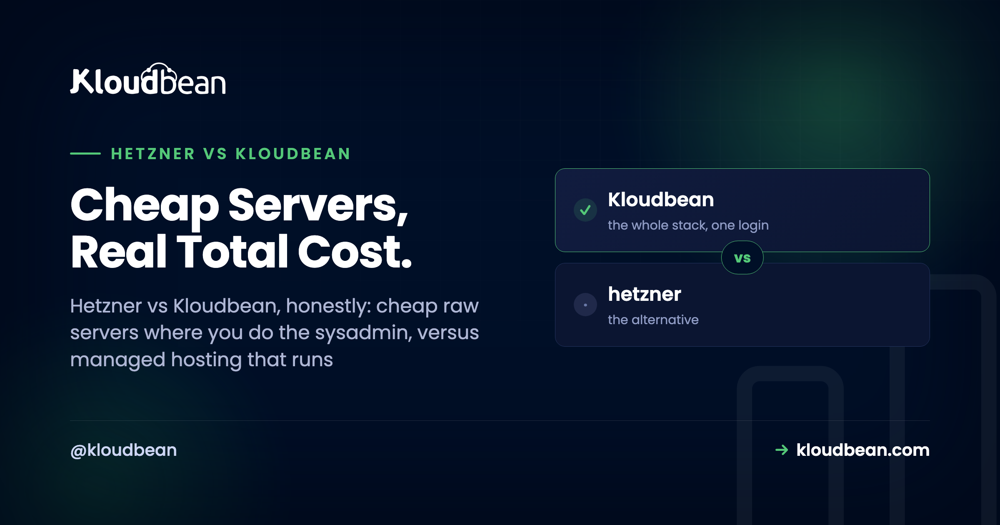

Hetzner vs Kloudbean: Cheap Raw Servers vs Managed Hosting

Hetzner vs Kloudbean is a slightly unfair fight on price, and a completely different fight on everything else. Hetzner rents some of the cheapest, most powerful raw servers you can buy. Kloudbean runs a managed platform on seven other clouds, where the stack, SSL, patching, and backups are handled for you. So the real question was never which sticker is smaller.
It's what the server actually costs you once your time, your security, and your 2am incidents land on the bill. Let's do that comparison properly. Hetzner earns real credit here, and I'll give it plainly. Then we'll add up the parts of a cheap server that never show on the pricing page.
Hetzner is a genuinely great deal for raw compute, and it's unmanaged, so you own every operations task on the box: patching, SSL, firewall, backups, and the pager. Kloudbean is managed hosting on a different set of clouds, so the server, stack, free SSL, patching, and automatic backups are handled while you keep your app and data. Want the lowest bill and enjoy the ops? Hetzner. Want your time back? Managed.
What Hetzner actually is, and why people love it
Credit where it's due, because Hetzner earns it. It's a German provider with a hard-won reputation for one thing above all: price to performance that's tough to beat. The Hetzner Cloud line gives you fast VMs for a few euros a month, and the dedicated servers, including the famous auction of used hardware, hand you a lot of real metal for the money. If your only metric is raw compute per dollar, Hetzner is often the sharpest deal on the board.
The hardware is quick, the network is solid, and the pricing is refreshingly flat, with generous traffic allowances instead of metered-egress surprises. If you're in Europe, the data centers sit close to home, mostly in Germany and Finland, with US locations added more recently. For a confident sysadmin who wants a big, cheap box and full root control, Hetzner is a legitimately excellent choice. I'd recommend it there without blinking.
So this isn't a hit piece. If you're shopping for a Hetzner alternative because someone said Hetzner is bad, stop. It isn't. The reason to compare is different, and it has nothing to do with the hardware.
Does Kloudbean run on Hetzner?
No. This one matters, so I'll be direct. Kloudbean does not provision servers on Hetzner. Its clouds are AWS, AWS Lightsail, Google Cloud, Linode, Vultr, DigitalOcean, and UpCloud. Seven of them. Hetzner isn't on that list, and this article won't pretend otherwise.
That makes this a true external comparison, not a "same box, different label" story. On one side, Hetzner: rock-bottom raw servers where you do all the sysadmin. On the other, a managed platform on seven other tier-1 clouds that takes the operations off your plate. So "Hetzner vs Kloudbean" really means raw and cheap versus managed and hands-off, on different infrastructure. Go the Kloudbean route and you'd run your app on one of those seven clouds, not on Hetzner. A migration, not a rewrite. More on the split in managed vs unmanaged hosting.

The honest catch: raw means you're the sysadmin now
A raw Hetzner server is an empty, powerful room. Everything that turns it into a live, secure, backed-up application is your job. Not hard, exactly. Just yours, and it never stops.
Day one on a fresh box, and every line is now your task:
# a fresh Hetzner box, day one, all yours
apt update && apt upgrade -y # patch the OS, then keep patching it
apt install nginx mysql-server php-fpm # install the whole stack by hand
ufw allow 80,443/tcp && ufw enable # write your own firewall rules
certbot --nginx -d yourdomain.com # issue SSL, then remember to renew it
# still yours after this: backups, monitoring, fail2ban, and the 2am pagerThen it becomes a routine. Patch the OS and stack, or you're the soft target a scanner finds. Renew SSL before it lapses, because the day one expires, every visitor hits a browser wall reading NET::ERR_CERT_DATE_INVALID and your site looks broken. Set up backups, store them off the box, and restore once to prove they work, because a backup you've never tested is a rumor. Watch the disk before it fills. And when it falls over on a Sunday, you're the on-call engineer. There's no other name on the rota.
None of that is exotic. It's the ordinary tax of owning a server, and on Hetzner you're the tax collector. Enjoy it and it's a perk. If you'd rather ship, it's a slow leak you pay for in evenings.
The real total cost of a cheap Hetzner server
This is the section that settles most of these decisions. The sticker on a Hetzner box covers raw compute and nothing else. For an honest number, add the invisible line items. I won't invent dollar figures for your situation, they'd be fiction, but the categories are real, and so are the hours.
- The sticker. A few euros a month for the VM. Real, and genuinely cheap. This is the only number most comparisons show.
- Your time. Setup, patching, SSL renewals, backup checks, monitoring, and the occasional fix. Call it a handful of hours in a calm month, more in a bad one. Multiply by whatever an hour of yours is worth. That's the line item that dwarfs the sticker.
- Risk. Skip one patch and catch a compromise. Miss one backup check and find the restore is broken on the day you need it. A single lost database can cost more than years of a management fee.
- Downtime. When the box falls over during your busiest hour and you're asleep, that outage costs real revenue and trust, whether or not anyone invoices you.
Put those on one chart and the shape is always the same: the visible price is a sliver, and the real monthly cost towers above it in hours and risk you carry personally.
My honest read after seeing this many times: a cheap VPS was never actually cheap. It's the sticker plus every hour it takes to keep alive, plus the tail risk of the month you skip a step. We ran the full breakdown in the real cost of an unmanaged VPS, and the pattern holds whatever logo is on the box. Weighing the entry rung? Free tier vs cheap VPS hits the same math from another angle.
What Kloudbean gives you instead
Managed hosting moves that whole stack of chores to the platform. On Kloudbean you still pick a real cloud, so you're on tier-1 infrastructure; what changes is the layer on top. You launch a server and it comes up already hardened, with a Shorewall firewall and Fail2ban running, free SSL ready to issue and auto-renew, and automatic backups on. No day-one apt install marathon.

The bigger difference is scope. Hetzner gives you servers. Kloudbean gives you one dashboard for the whole stack. That means servers and applications, plus seven managed database engines you launch with one click (MySQL, MariaDB, PostgreSQL, Redis, Memcached, Elasticsearch, and MongoDB), built-in S3-compatible object storage and managed Google Cloud Storage buckets, and a built-in Flexible Load Balancer you enable when you need it. All under one login. On a raw box you'd install, secure, and babysit each of those yourself. If your app needs a database, wiring one up is a click rather than an afternoon of installing and hardening it by hand.

Deploys change too. Instead of SSH and hand-rolled scripts, you connect a Git repo and the platform builds and ships on every push, with live build logs in the console. There's staging for WordPress and Laravel, subusers with granular access control, and cron jobs from the UI without a terminal. That's what people mean by managed, spelled out in what a managed server is. Server, stack, SSL, patching, and backups are handled, and your app code and data stay yours to export any day.

Automatic backups are only worth what a restore proves, so run one before you need it. The server backups guide covers the drill.
Hetzner vs Kloudbean, side by side
Here's the whole comparison in one table, honest about where Hetzner wins (the raw sticker) and what managed folds in. No invented prices, and no pretending Kloudbean runs on Hetzner.
| Dimension | Raw Hetzner (you operate) | Kloudbean managed (platform operates) |
|---|---|---|
| Price model | A few EUR/mo, raw compute (cheapest on sticker) | From $8/mo, management included |
| Who patches the OS | You, forever | Handled for you |
| SSL certificates | You install and renew | Free, auto-renewing |
| Backups | You script, store, and test | Automatic backups |
| Security baseline | You configure the firewall and fail2ban | Shorewall + Fail2ban on by default |
| Managed databases | You install and run them | 7 engines, one-click (MySQL, MariaDB, PostgreSQL, Redis, Memcached, Elasticsearch, MongoDB) |
| Object storage | Roll your own or bolt on a service | Built-in S3-compatible plus managed GCS buckets |
| Load balancer | You set up and maintain HAProxy or nginx | Built-in Flexible Load Balancer, enable when needed |
| Deploys | SSH and your own scripts | Managed CI/CD from Git, live build logs |
| Dashboard scope | Server console only | Servers, apps, databases, storage, load balancer, one login |
| Cloud choice | Hetzner regions | 7 clouds: AWS, Lightsail, GCP, Linode, Vultr, DigitalOcean, UpCloud |
| EU data residency | Strong, EU-based (Germany, Finland) | EU regions available via its clouds |
| Support model | Docs and community, you're on call | Platform handles the infrastructure side |
| Best for | Confident sysadmins who want the lowest bill | Teams whose time and uptime beat the price gap |
Read the price row and the OS row together, and there's the trade. Hetzner wins the sticker. Kloudbean wins the rows underneath. You're not paying more for the same server, you're paying to delete the list. For the wider field of managed platforms, we lined them up in best managed cloud hosting.
Is Hetzner good for WordPress or production?
Yes, with an asterisk. A Hetzner box will run WordPress, WooCommerce, Laravel, a Node API, or a Django app happily. The hardware is more than enough. But Hetzner for WordPress means you install and secure the LEMP stack, tune PHP, set up caching, issue and renew SSL, harden logins, schedule backups, and watch for the plugin that just opened a hole. Hetzner hands you the engine. You're still the mechanic.
For production, the question isn't "can Hetzner handle it." It's "who handles Hetzner." If that's you and you're good at it, great, you'll run a lean, cheap, fast site. If it isn't, a managed platform gives you the same app on tier-1 infrastructure with the ops covered, plus staging to test changes before they hit real customers. That's the gap between a server that technically runs your store and one you don't think about at midnight.
Data residency: Hetzner is EU-centric
If keeping data in Europe matters, Hetzner's EU footprint is a real strength. Its core data centers are in Germany and Finland, with US locations more recently, so European residency is easy, and it's a common reason teams pick it. Credit earned.
Managed hosting doesn't lose that option, though. The clouds Kloudbean runs on have EU regions too, so you can keep an app and its data in Europe while still handing off the operations. I won't overclaim specific city names, because the right region depends on which of the seven clouds you pick and what your compliance rules require. We unpacked it in data residency explained. The takeaway: EU residency isn't a Hetzner-only feature, so it shouldn't be the single reason you skip managed.
So which should you pick? An honest call
I'll take a position, because "it depends, both are great" helps no one. Pick Hetzner if you're a confident sysadmin who wants the absolute lowest bill and you're happy doing the ops. If you know your way around nginx, cron, certbot, and a firewall, and you don't mind the maintenance, Hetzner is one of the best deals in hosting. Full stop. Paying for management on top would be paying someone to not do a job you'd do well yourself.
Pick managed if your time and uptime are worth more than the price gap. If every hour on patching is an hour not shipping, if "who fixes it at 2am" can't only be you, or if you'd rather see servers, databases, storage, and a load balancer in one dashboard than assemble them by hand, the higher sticker buys back real hours and real risk. Most teams running something that earns money land here, and plenty of strong engineers choose it on purpose.
The trap is picking on the sticker alone and discovering the rest of the bill in your evenings. Choose on the total, not the tip.
A rehoming, not a rewrite.
Migration assistance is free and there is a free trial to prove the setup first. You keep Git-based deploys, get managed databases beside the app, and pay a flat monthly price on the cloud you choose.
- ✓ Free migration assistance
- ✓ Free trial
- ✓ Seven cloud providers
- ✓ Flat monthly price
- ✓ Managed databases
- ✓ Git deploy
Plans from $8/mo · Free migration assistance · Free trial
FAQ
Does Kloudbean run on Hetzner?
No. Kloudbean provisions on seven clouds: AWS, AWS Lightsail, Google Cloud, Linode, Vultr, DigitalOcean, and UpCloud. Hetzner isn't one of them. Moving over means running your app on one of those clouds instead, and migration help is free.
Is Hetzner cheaper than managed hosting?
On the sticker, yes, usually clearly so. On total cost it's closer, once you add your time for patching, SSL, backups, and incidents, plus the risk of a breach or an outage. Counted honestly, the cheap box often isn't cheaper.
Is Hetzner good for WordPress or production?
The hardware is more than good enough. The catch is you install and secure the stack, tune it, renew SSL, and run backups yourself. Fine if you're a sysadmin. If not, managed hosting handles that, with staging included.
What's the real cost of a cheap VPS?
The sticker plus your time plus risk. The fee buys raw compute only. Add the hours for patching, backups, and monitoring, plus the tail risk of a lost database or an outage. The true number sits well above the page price.
Is Hetzner managed hosting?
No. Hetzner sells unmanaged infrastructure: raw cloud VMs and dedicated servers. You get the machine and an OS, and every task above that is yours. That's exactly why the pricing is so low, and it fits people who want full control.
When is managed hosting worth it over Hetzner?
When your time and uptime beat the price gap. If you'd rather ship than patch servers, or you can't be the only answer to a 2am outage, managed pays for itself. If the ops work is the point, or your hours are genuinely free, Hetzner wins.
Where are Hetzner's data centers?
Hetzner is EU-centric, with core data centers in Germany and Finland, and US locations added more recently. That EU footprint helps if European data residency matters. Managed platforms can keep data in Europe too, via their clouds' EU regions.
Can I move off Hetzner to a managed platform without rebuilding?
Usually yes. Your app and data are portable, so it's a migration, not a rewrite: bring the code, restore the data, repoint the domain. Kloudbean offers free migration assistance if you'd rather not run it yourself.
Is Hetzner reliable and good value?
Yes. Hetzner has a strong reputation for fast hardware, a solid network, and flat pricing. With a raw server the risk isn't the infrastructure, it's the operations layer on top. Reliable hardware still goes down if nobody maintains it.
What do I give up by going managed instead of Hetzner?
Mostly the lowest bill and deep, unusual control over the OS. Need a custom kernel? Raw wins. You don't lose ownership: it's Linux either way, and your app and data stay yours to export.